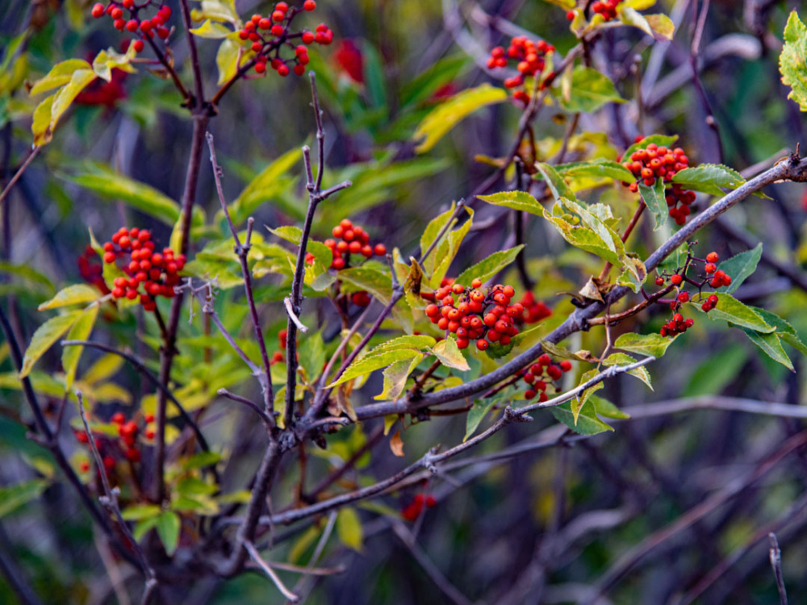
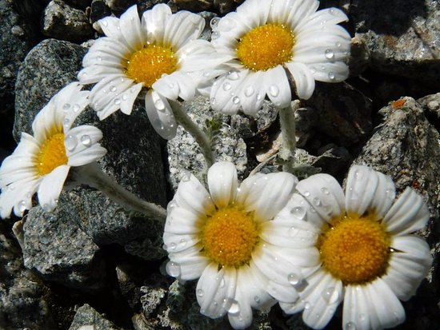
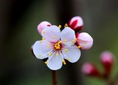
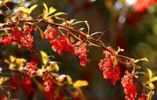

Виды растений

Бузина красная
Кустарник с ярко-красными ягодами, произрастающий в лесном поясе ущелья на высоте 1600–2400 м.

Барбарис
Колючий кустарник с синевато-фиолетовыми ягодами, типичный представитель субальпийского пояса.

Мак полярный
Жёлтые цветки высокогорного мака украшают каменистые склоны на высоте 3000–4000 м над уровнем моря.

Рихтерия эдельвейсовидная
Редкое высокогорное растение с белоснежными цветками, обитающее на скалистых осыпях альпийского пояса.

Цветки алычи
Нежные розово-белые цветки алычи появляются ранней весной и знаменуют начало вегетационного сезона в парке.